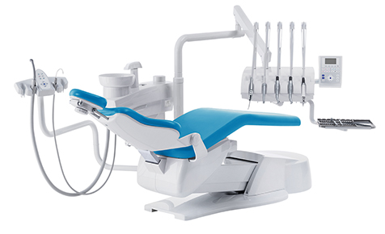

Оказываем полный спектр стоматологических услуг, начиная от диагностики
и заканчивая сложными хирургическими и терапевтическими операциями.
Чтобы поставить правильный диагноз, пациенту делают прицельный рентгеновский
снимок на переносном рентген-аппарате, т.е. пациенту не приходиться никуда выходить,
снимок делают на месте, что не отнимает время.
В нашей клинике вы сможете вылечить:
- Кариес и осложнения
- Разрушения эмали
- Клиновидные дефекты
- Повреждения видимой части зуба в результате травмы
Запишитесь на бесплатное обследование зубов и консультацию стоматолога:
- Звоните нам по телефонам в Алматы: +77074553455; +7(727)3298787;
- Или оставьте заявку на сайте и мы сами вам перезвоним.
Имплантация зубов является высокотехнологичным и безопасным методом протезирования,
при котором происходит замена отсутствующего зуба (или группы зубов) способом,
имитирующим естественное расположение зубов в челюсти.
При этом, имплантаты не отличить от настоящих зубов.
Но в отличии от обычных зубов, имплантаты имеют более высокую
прочностью и будут служить вам всю жизнь.
В нашей клинике вы можете:
- Получить консультацию по установке и подбору имплантата
- Установить имплантат, или даже заменить несколько зубов
При этом мы единственные в Алматы, кто даёт пожизненную гарантию на установленные нами имплантаты.
Мы можем проконсультировать вас бесплатно:
- Звоните нам по телефонам в Алматы: +77074553455; +7(727)3298787;
- Или оставьте заявку на сайте и мы сами вам перезвоним.
Протезирование зубов – одна из самых востребованных стоматологических процедур.
Мы помогаем установить следующие виды протезов:
- Условно-съемные протезы
- Мостовидные протезы
- Коронки из металлокерамики
- Безметалловые керамические коронки на основе оксида циркония
- Зубные вкладки
- Виниры (альтернатива отбеливанию зубов)
- Бюгельные протезы (протезирование без обточки, крепление на кламмерах или микрозамках)
- Нейлоновые
- Силиконовые (мягкие) протезы
Мы можем проконсультировать вас бесплатно:
- Звоните нам по телефонам в Алматы: +77074553455; +7(727)3298787;
- Или оставьте заявку на сайте и мы сами вам перезвоним.
О Белоснежной улыбке мечтает каждый. В действительности - сделать это не так уж трудно. отбеливание помогает не только сделать улыбку ярче, но и скрыть дефекты. Если вы сейчас стесняетесь улыбаться из-за проблем с эмалью или потемнениям зубов - мы можем это исправить.
Как проходит процедура:
- Проводим профессиональную чистку зубов, чтобы избавить от налёта
- Подбираем оптимальный по цене способ отбеливания
- Производим процедуру и даём рекомендации по сохранению белизны
Удивите своих друзей и близких белоснежной улыбкой, как у голливудских звёзд!
Мы можем проконсультировать вас бесплатно:
- Звоните нам по телефонам в Алматы: +77074553455; +7(727)3298787;
- Или оставьте заявку на сайте и мы сами вам перезвоним.
Мы можем проконсультировать вас бесплатно:
- Звоните нам по телефонам в Алматы: +77074553455; +7(727)3298787;
- Или оставьте заявку на сайте и мы сами вам перезвоним.
От красивой и здоровой улыбки зависит очень многое. Чтобы она была открытой и естественной, необходимо решить все проблемы с кривизной зубов или неправильным прикусом. Обратившись в клинику «Универсал», вы сможете получить высококлассное ортодонтическое лечение. Единственное, что необходимо сделать – записаться на прием к нашим специалистам. Они подберут оптимальный для вас вариант решения проблемы: брекеты (металлические, керамические или сапфировые), элайнеры, определят сумму и план лечения.
Виды брекетов
Ровные, красивые и здоровые зубы – главный критерий привлекательности современного человека, который следит за своим здоровьем, внешностью. Однако большинство людей считает, что исправить неправильный прикус можно только в детском возрасте. В реальности благодаря использованию современных брекетов любой взрослый человек может пройти успешное ортодонтическое лечение, которое сделает его улыбку красивой, а зубы ровными и здоровыми. Где лучше купить и поставить брекеты?
Ортодонтия нашей стоматологической клиники предлагает самые различные виды брекет систем, которые подходят для детей и взрослых – прозрачные, сапфировые, металлические, золотые, цветные, керамические как с лигатурами, так и самолигирующие.Сколько стоит поставить брекет систему? Стоят ортодонтические конструкции в нашей клинике невероятно доступно для всех, а их цена складывается из типа конструкции и материала, из которого она изготовлена. При этом мы предлагаем новейшие, самые незаметные и эффективные, в том числе эстетические брекеты, которые исправят ваш прикус и гарантируют отсутствие любого психологического дискомфорта, связанного с ношением.
Виды брекетов
Ровные, красивые и здоровые зубы – главный критерий привлекательности современного человека, который следит за своим здоровьем, внешностью. Однако большинство людей считает, что исправить неправильный прикус можно только в детском возрасте. В реальности благодаря использованию современных брекетов любой взрослый человек может пройти успешное ортодонтическое лечение, которое сделает его улыбку красивой, а зубы ровными и здоровыми. Где лучше купить и поставить брекеты?
Ортодонтия нашей стоматологической клиники предлагает самые различные виды брекет систем, которые подходят для детей и взрослых – прозрачные, сапфировые, металлические, золотые, цветные, керамические как с лигатурами, так и самолигирующие.Сколько стоит поставить брекет систему? Стоят ортодонтические конструкции в нашей клинике невероятно доступно для всех, а их цена складывается из типа конструкции и материала, из которого она изготовлена. При этом мы предлагаем новейшие, самые незаметные и эффективные, в том числе эстетические брекеты, которые исправят ваш прикус и гарантируют отсутствие любого психологического дискомфорта, связанного с ношением.
Зубная боль и кариес не начинаются по расписанию, и, порой, это случается в довольно позднее время. Естественно, ребенок не может терпеть длительный дискомфорт. Решением этой проблемы станет детская стоматология Алматы «Универсал», которая работает круглосуточно. Высококлассные врачи-стоматологи окажут квалифицированную помощь, успокоят малыша и найдут к нему правильный подход.
Кариес временных, так называемых «молочных» зубов надо лечить в том числе и потому, что их состояние в значительной мере гарантирует здоровье всего организма в целом. В зависимости от стадии развития кариеса или возможностей его развития (с учетом возраста ребёнка) выбирают соответствующую методику лечения по принципу: максимальный эффект при минимальном вмешательстве.
Сепарация контактной поверхности молочного зуба
Лечение поверхностных кариозных полостей фронтальных временных зубов очень часто производится путем сепарации (сошлифовывания) пораженных поверхностей зубов с последующим покрытием их реминерализирующими препаратами, например фторлаком.
Воспаление дёсен: гингивит, пародонтит. Симптомы и лечение.
Воспаление дёсен является достаточно распространённым заболеванием полости рта, которым в той или иной степени страдают около 2/3 всех пациентов. Симптомами воспалительного процесса служат покраснение и отёк дёсен, неприятный запах изо рта, иногда зуд или болезненные ощущения (десна чешется и болит), а самым наглядным показателем, пожалуй, является кровоточивость дёсен. Часто это проявляется при чистке зубов или при кусании твёрдой пищи, например, яблока, на котором после укуса остаются следы крови. Иногда в стоматологическую клинику приходят пациенты, которые жалуются на зубную боль, а при осмотре и диагностике выясняется, что причиной беспокойства является не зуб, а боль в десне. К сожалению, из-за недостатка информации по поводу именно проблем с дёснами к стоматологу обращаются немногие (особенно при слабо выраженных симптомах). А зря, ведь если заболевание не лечить, то оно будет прогрессировать, что может привести к более серьёзным последствиям, чем зуд, покраснение и кровоточивость дёсен. Об этом мы расскажем чуть ниже.
Ткани, окружающие зуб и удерживающие его в челюсти, называются пародонт. А врач-стоматолог, который специализируется на лечении дёсен и более глубоких тканей, окружающих зуб, называется пародонтолог.
В нашей клинике проводится удаление зубов максимально щадящими методами, с обязательным применением анестезии в случаях малейшего хирургического вмешательства. Мы стремимся к тому, что бы пациент во время операции не испытывал никакого дискомфорта – ни физического, ни психологического. Любая операция проводится с максимальной точностью, что бы исключить повреждение окружающих тканей. Это позволяет избежать осложнений в период реабилитации, уменьшить размер костного дефекта и ускорить выздоровление пациентов. Малая площадь повреждения костной ткани на месте удаленного зуба очень важна при последующей имплантации зуба.
Удалить поврежденный зуб мы рекомендуем только в том случае, если его восстановление невозможно, а лечение не принесет желаемого результата. Высокий уровень квалификации наших врачей позволяет вылечить достаточно сложные случаи, но если уж дело дошло до удаления, то можете смело соглашаться на эту операцию – вам будут предложены самые эффективные варианты анестезии и минимальное оперативное вмешательство. Это позволит перенести удаление зуба с максимально возможным комфортом и ускорит процесс заживления раны. Только после полного восстановления тканей становится возможным следующий этап – протезирование.
По всем интересующим вопросам звоните нам по телефонам +77074553455; +7(727)3298787; +7(727)2929777, записывайтесь с помощью формы для онлайн-записи на странице этого сайта или через инстаграм. Помните, чем раньше Вы обратитесь к стоматологу, тем быстрее, легче и дешевле будет лечение.
Чистка любых зубов ультразвуковым аппаратом процесс сложный. Давайте разберемся, что же к нему ведет. Зубной камень – явление, которое встречается практически у каждого пациента. Его основные признаки – кровоточивость, воспаление десенных тканей, неприятный запах, кариозные процессы.
Предотвратить их образование может только постоянная гигиена рта. В данном плане ультразвуковая процедура является незаменимой.
Только ультразвуковое снятие зубных отложений возможно на всех поверхностях, включая те, которые остаются недоступными для стандартных щеток – межзубные пространства, участки, спрятанные под деснами.
Проводится чистка ультразвуком зубов с использованием ультразвукового скайлера, работа которого основана на эффекте кавитации. Наконечник прибора, публикующий с частотой до 30 тыс. колебаний в секунду, увлажняется водой, которая в результате воздействия ультразвука вспенивается и доходит до самых отдаленных и труднодоступных участков зубной дуги и снимает отложившийся камень.
После ультразвука зубные эмаль подвергается обработке по технологии airflow, что позволяет ее отшлифовать, отполировать и придать белизну.
Чтобы поддерживать результат, air flow чистка зубов должна проводиться не реже двух раз ежегодно. Процедура выполняется не больно, не требует обезболивания. После нее зубы приобретают естественную белизну, и полностью очищаются от отложений.
Оборудование для стоматологии представлено стоматологическими установками Mercury, Victor, Woson, компрессорами Ekom и ND, а также лечебным и диагностическим оборудованием от Woodpecker (Китай), Геософт (Россия),
Оборудование для стоматологии представлено стоматологическими установками Mercury, Victor, Woson, компрессорами Ekom и ND, а также лечебным и диагностическим оборудованием
Не тяните с лечением из-за отсутствия денег. Наша клиника, совместно с Альфа-банком предлагает рассрочку до 11-ти месяцев. Без первоначального взноса и переплат. Нужен только паспорт и пенсионное удостоверение.
Главный врач сети клиник “УНИВЕРСАЛ”.
Стаж работы 13 лет
Специализация и виды оказываемых услуг:
- Хирургическая стоматология
- Имплантация зубов
- Протезирование зубов и Виниры
- Терапевтическая практика
- Ортодонтия, исправление прикуса
Повышения квалификации и специализации:
- Ординатура с 2005-2007 гг в КазНМУ им.С.Ж.Асфендиярова,
- Курсы по имплантологии, ортопедии, ортодонтии с 2006-2007 гг
- В 2010-2013гг преподаватель по стоматологической хирургии на кафедре КазНМУ им.С.Д.Асфендиярова
Проходила курсы специализации и повышение квалификации в Германии, Южной Кореи, США и Италии.
Врач-стоматолог высшей категории.
Стаж работы: 21 год.
Специализация и виды оказываемых услуг:
- Хирургическая практика
- Имплантация
- Протезирование зубов и Виниры
С 2006 года частная практика стоматологом терапевтом и ортопедом.
Имеет 2 патента на изобретение и 1 авторское свидетельство.
Владеет современными методами имплантации, протезирования и лечения зубных каналов.
Стоматолог-терапевт.
Стаж работы: 7 лет.
Специализация и виды оказываемых услуг:
- Стоматолог-терапевт
- Эстетист, восстановление и реставрация зубов
- Эндодонт-трехмерная обтурация каналов любой сложности
- Пародонтолог, профессиональная чистка зубов, карманов и лечение десен
- Гигиенист, профессиональная чистка зубов от зубных отложений методом ультразвука и airflow
- Консультант по гигиене и уходу полости рта
Врач-ортодонт.
Стаж работы: 7 лет.
Специализация и виды оказываемых услуг:
- Ортодонтия, исправление прикуса любой сложности
- Профилактика и пародонтология, профессиональная чистка зубов и удаление зубных отложений.
- Лечение и пломбирование зубов
Стоматолог-терапевт.
Стаж работы: 4 года.
Специализация и виды оказываемых услуг:
- Терапевтическая стоматология, лечение и восстановление зубов
- Ортопедическая стоматология, протезирование зубов
Врач проводит полное обследование полости рта и выявляет причину боли. Если необходимо - делаем рентген-снимок. Рассказываем как избавиться от проблемы. Какое лечение необходимо и сколько это будет стоить.
Основная задача - быстро и без боли исправить проблему.
Работаем аккуратно, с заботой о клиенте. Чтобы не было больно - используем анестезию. Если наши пациенты дети - предлагаем игрушки и стараемся отвлечь их во время процедуры.
На наши пломбы мы даём гарантию от 5 лет.
Если по какой-то причине она вылетит, заменим бесплатно! На импланты и протезы гарантия 5 лет и т.д.
Уже 10 лет помогаем людям избавиться от боли в зубах и приобрести ослепительную улыбку. За это время сформировалась сильная команда врачей-стоматологов.
Оказываем любые стоматологические услуги, вне зависимости от сложности.
Мы единственная стоматология в Алматы, которая предлагает гарантию от 5-ти лет на лечение и протезирование зубов. А на импланты - пожизненную гарантию.
В Алматы у нас две стоматологические клиники. Записаться на бесплатное обследование зубов вы можете по телефонам, либо на этом сайте.
Адрес: г.Алматы, пр.Аль-Фараби д.19/110,
уг.ул.Шашкина
Телефоны:
+7 (727) 329-87-87
+7 (707) 455-34-55
Режим работы: с 10:00 до 18:00
Адрес: г.Алматы, Кабдолова 2 (Маречка),
уг.ул.Отеген батыра
Телефоны:
+7 (727) 395-98-32
+7 (727) 226-59-00
Режим работы: с 10:00 до 18:00
Скоро с Вами свяжется наш менеджер